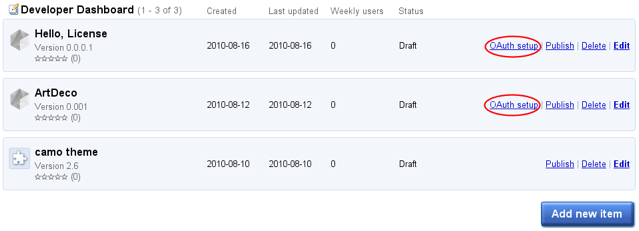

Go to the Chrome Developer Dashboard. As the following screenshot shows, each app that you've uploaded and that uses Chrome Web Store Payments has an OAuth setup link that lets you get OAuth information for that app.

In this dashboard, two apps have an OAuth setup link
Note: If you don't see the OAuth setup link for your app, click the Edit link and use the Change pricing button to specify that your app uses Chrome Web Store Payments.
Click the OAuth setup link. You get a page with OAuth information for the Licensing API. At the bottom of that page is the information you need to make Licensing API requests with your app, including the app ID but not the access token and token secret. Here's an example of what you might see:

What the bottom of the OAuth window looks like before you generate a token
Click the Generate new token button at the bottom of the page to generate the OAuth access token and token secret for your app.

What you see after generating a token
Record the token and token secret in a safe place. The dashboard will not show them to you again.